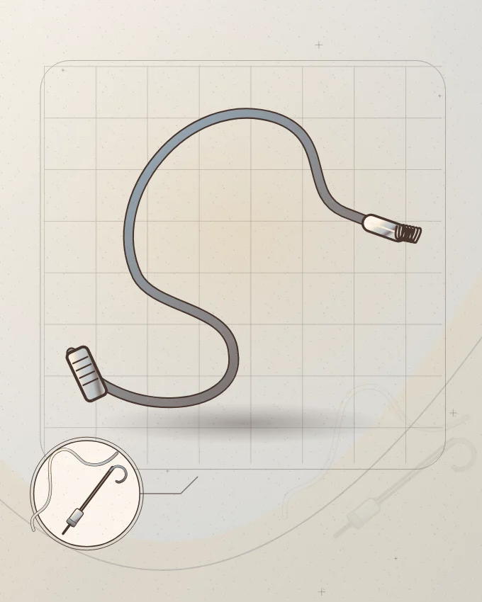
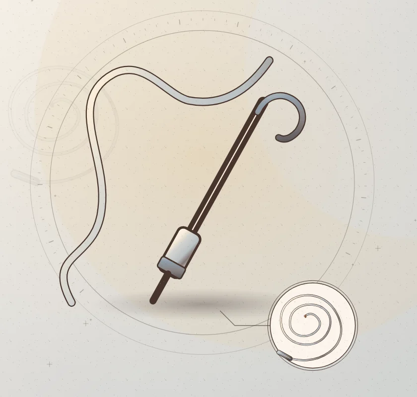
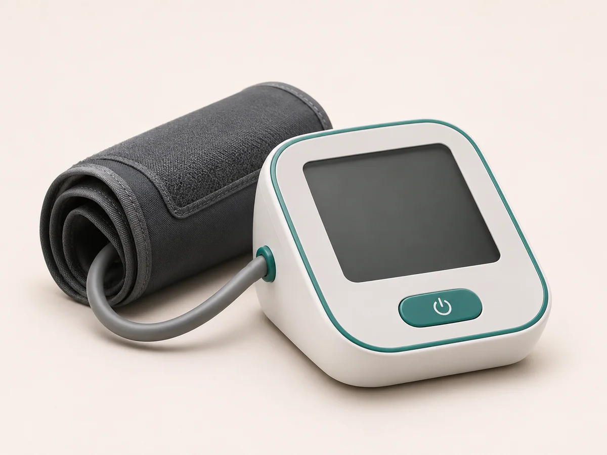

Cardiac imaging review
Go through an echocardiogram or imaging report and discuss what its findings mean.
MBBS, MD, DM (Cardiology)
Medical Regd. No.: Not supplied
Marathi, English, Hindi

Review the conclusions in your imaging report and what they mean for the next appointment.
Dr. Chirag Parekh is a cardiologist in Pune. He sees adults for cardiac imaging review and other cardiovascular concerns. During an appointment, you can describe what prompted the visit and which questions matter most to you. Bring your previous heart test reports and a list of medicines, including their doses. If you record your blood pressure or symptoms at home, bring those notes as well. You can discuss what each finding means, whether a further assessment would help and how to arrange the next review.
Explore cardiac imaging review and the other appointments available at the practice.
Go through an echocardiogram or imaging report and discuss what its findings mean.
Review lipid results and the factors that may affect your cardiovascular risk.
Talk through changes in your symptoms, activities and existing care plan.
Review your personal and family history alongside cardiovascular risk factors.
Discuss recovery goals, rehabilitation and follow-up after a cardiac admission.
Bring procedure records or discharge notes to review your ongoing coronary care.

Review the conclusions in your imaging report and what they mean for the next appointment.
Bring your own account of symptoms, along with earlier test results and medicine changes.
Discuss what the results explain, which questions remain and what a further test might add.
Leave with an opportunity to clarify the next review and what to bring.
Choose an appointment, gather your records and discuss the next steps with the cardiologist.
Select a clinic or online appointment and choose an available time.
Share your concerns, medicines and any heart test reports from previous visits.
Ask about the findings and what the doctor recommends for your circumstances.
Agree when to review progress and which results to bring to the next visit.
Find clinic details and choose an available appointment.
Parekh Heart Clinic
Suite 131, Garden Court (illustrative address)
Pune, Maharashtra – 411004
Phone number: NA
Email: NA
A closer look at the instruments and recordings used in a heart assessment.



A few useful details to help you prepare for your consultation.
Angina is chest discomfort when the heart muscle gets too little blood, usually during effort, and settles with rest. A heart attack pain lasts longer and does not ease, so treat it as an emergency.
Breathlessness, swollen ankles, quick tiredness and needing extra pillows to sleep are common signs. Medicines and lifestyle changes help many people stay active.
It is an irregular heartbeat that raises the risk of blood clots and stroke. An ECG detects it, and treatment lowers stroke risk and eases symptoms.
Yes, a parent or sibling with early heart disease raises your risk. You can offset much of it with early screening, a healthy diet and regular exercise.
Choose whole grains, dals, vegetables, fruits and nuts, and use less ghee, fried snacks and sugar. Cooking with small amounts of oil and rotating oils protects your arteries.
A stent opens one or few blocked arteries with a small tube through a thin catheter. Bypass surgery creates new routes around several or complex blockages.
From My Social Media
Updates and information from the practice.